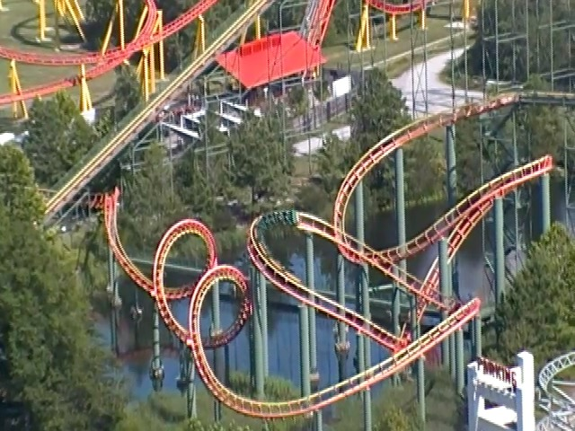
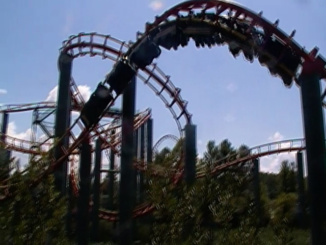
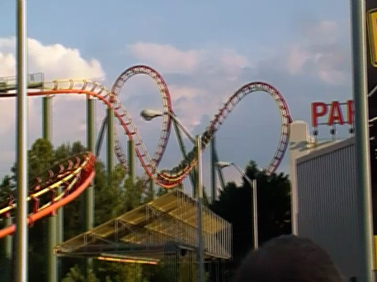

| |

Anaconda Review

For today's review, we're gonna have to travel back in time to 2019 when Anaconda was at Kings Dominion. This was the parks Arrow Mega-Looper. Yeah. It was one of the smaller ones and far from the best. But it still was fun. Anyways, we got in the cars, pulled down the OTSRs, and off we went! We dipped out the station and began climbing the lifthill. There actually was a decent view here. Mainly of Kings Dominion, specifically Racer 75, Pantherian, the layout of Anaconda that we're were about to go through, the pond that Anaconda sat on, and the trees all around the park. We eventually reached the top and headed down the first drop. It was....all right. You basically went down a curved drop. Except it was a little awkward. And not steep at all. It was kind of like the Arrow version of the first drop on Silver Bullet. And then we headed into a tunnel. Except this tunnel was different. Yep. It's another underwater tunnel. Yeah. This one wasn't nearly as cool as the one on Vanish in Japan. But that's because there were no special effects with this tunnel. Anyways, we then popped out of the underwater tunnel, rose up to the sky until we reached the vertical loop. I'm always amused at the old-school Arrow loopers, where they have to have their loops in the sky because Arrow only knew how to make one size of loops right til the end of their career. But anyways, it was pretty cool. Just a standard loop. We rolled through that and went into a sidewinder. Oh boy. Brace for impact. Nah, turns out that it wasn't that bad. Though there was a mild smack right here. Some vest restraints would've been nice. But of course, Cedar Flags decided to demolish instead (not that this was a surprising move). We then headed up a tiny hill, and right into a banked turn. Yeah. There was a smack here. Thank god it was a banked turn. And we then glided into the midcourse brakes? Seemed a little early for that. Don't you think? Well, buckle up. Because this ride is about to get weird. So yeah. The mid course brakes were HARSH!!! Damn near stopping us. We went down a small curved drop, which really didn't give us much speed. We then headed into.....what could only be described as a tiny tight coathanger turnaround. This thing looks incredibly painful off-ride. It spared you the pain due to your slow speed. But at the same time, this was incredibly awkward. And then....you got to go through another one of those awkward coathanger turns. Seriously! This ride might possibly take the award for most coat-hangerish layout of any coaster! Cause....I don't really get this ride. Even by Arrow standards, this was pretty wonky. We went around another turn, and....tumbled through some corkscrews. Oh finally. Some rembelence of sanity on the ride. And these were slow Arrow Corkscrews. Those are always fun. We went through another tiny awkwardly banked hill. Dipped down under the lifthill. Awkward banked turn and into the brake run. Yeah. This ride was....while not as terrible as some people make it out to be, it was fairly slow, kind of sluggish, and so incredibly awkward. But it was still a little fun. And it's a dying breed. I was predicting this rides demise up until Cedar Flags pulled the plug and killed it. This may not be surprising, but I still wish they gave a prior announcement and allowed people to get their final rides. Also, it going as part of the great Cedar Flags coaster genocide of 2024 makes its demise more bitter, even if Anaconda alone isn't too surprising. Now you better leave your grubby little filthy hands off Viper now! >=(
6/10
Location: Kings Dominion
Opened: 1991
Died: November 3, 2024
Built by: Arrow
Last Ridden: July 28, 2019
Anaconda Photos


Home
|